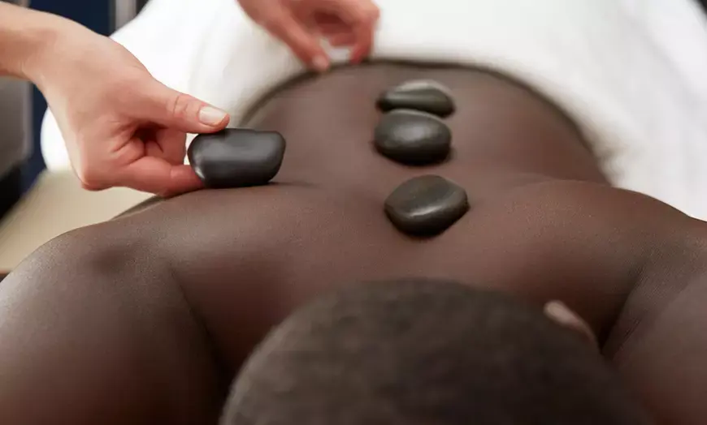

In this guide
Pickleball has exploded in popularity across Bellevue, Redmond, Kirkland, and the broader King County Eastside. Its fast pace, quick pivots, and repetitive swinging bring joy – and sometimes overuse injuries. One of the most common complaints is “pickleball elbow” (lateral epicondylitis, similar to tennis elbow). This guide explains what it is, how sports massage in Bellevue may help, and when to seek medical care. Whether you're a weekend player or compete in local tournaments, massage for pickleball elbow can be a valuable part of your recovery routine.
At Lazizi® Wellness, we work with active pickleball players who want to stay on the court while managing discomfort. Our licensed massage therapists understand the biomechanics of the sport and offer targeted bodywork, including mobile massage for pickleball players in Bellevue, Seattle, and King County – ideal for recovery after matches without leaving home.

What Is Pickleball Elbow?
Lateral epicondylitis, often called tennis elbow, affects the tendons that attach to the bony bump on the outside of the elbow. In pickleball, it is often caused by:
- Repetitive backhand strokes with improper form
- Gripping the paddle too tightly
- Using a paddle that is too heavy or has too much vibration
- Sudden increase in playing frequency or intensity
- Weak forearm extensor muscles
Symptoms include pain on the outside of the elbow, weakness when gripping, and discomfort when extending the wrist or lifting objects (like a coffee cup). Early attention can help prevent chronic issues.
How Sports Massage May Help Pickleball Elbow
Massage should not replace medical diagnosis or treatment, but it can be a helpful part of a recovery plan. Techniques that may benefit pickleball players include:
- Cross‑fiber friction – applied transversely to the tendon to help break up adhesions (only when appropriate and not acutely inflamed).
- Forearm muscle stripping – to release tension in the extensor muscles that attach at the elbow.
- Triceps and shoulder work – because elbow pain often originates from poor shoulder mechanics.
- Gentle stretching and range‑of‑motion exercises – to improve flexibility without aggravating the injury.
- Myofascial release of the upper arm and neck – addressing the kinetic chain.
Many players find that regular sports massage, combined with rest, ice, proper technique, and strengthening exercises, helps them return to play more comfortably.
Self‑Care Tips for Pickleball Players
- Rest and modify activity: Reduce playing frequency or switch to gentle practice.
- Ice after play: 10–15 minutes to reduce inflammation.
- Use a counter‑force brace: A strap worn below the elbow can reduce tendon strain.
- Strengthen forearm extensors: Wrist curls with light weights, eccentric exercises.
- Check your equipment: Paddle grip size, weight, and string tension can affect impact.
- Warm up properly: Dynamic stretches for wrists, forearms, shoulders, and back.
Combining self‑care with occasional sports massage may help you stay active longer.
When to See a Doctor for Elbow Pain
Massage is not a substitute for medical evaluation. Stop playing and consult a healthcare provider if you experience:
- Sharp, sudden pain during play
- Swelling, bruising, or visible deformity around the elbow
- Inability to grip objects (e.g., turning a doorknob, holding a paddle)
- Numbness or tingling in the hand or fingers
- Pain that persists for more than two weeks despite rest and self‑care
A doctor or sports medicine specialist can rule out fractures, nerve entrapment, or other conditions that require different treatment.
Mobile Pickleball Elbow Massage in Bellevue & King County
After a long match, driving to a studio can be a hassle. Our mobile sports massage service comes to your home in Bellevue, Redmond, Kirkland, Issaquah, Seattle, or anywhere in King County. We bring the table, linens, and clinical topicals so you can recover in comfort. Sessions can focus on the forearm, elbow, shoulder, and supporting muscles of the upper back and neck – all key for pickleball players.
If you also experience shoulder tension from overhead swings, you may find our guide on rotator cuff massage in Bellevue for overhead athletes helpful for comprehensive upper‑body recovery.
Prevention & Strengthening for Long‑Term Elbow Health
- Improve backhand technique: Use your whole body, not just the arm.
- Strengthen wrist extensors and flexors: TheraBand exercises, light dumbbell work.
- Maintain shoulder and thoracic mobility: A mobile upper back reduces elbow strain.
- Stay hydrated and stretch after playing.
For authoritative information on lateral epicondylitis, refer to the Mayo Clinic tennis elbow guide and the American Academy of Orthopaedic Surgeons.
Explore our sports massage and deep tissue services for athletes in King County. For at‑home convenience, learn about mobile massage for Bellevue, Redmond and the Eastside.
Stay on the court, pain‑free
Book a sports massage session for pickleball elbow relief in Bellevue, Redmond, Kirkland, or anywhere in King County. Mobile massage available – we come to you.
Book Your Pickleball Elbow Massage →Frequently Asked Questions – Pickleball Elbow Massage
What is pickleball elbow?
Pickleball elbow is a common term for lateral epicondylitis – pain on the outside of the elbow caused by overuse of the forearm extensor muscles. It is similar to tennis elbow and often results from repetitive backhand strokes or improper paddle technique.
Can massage help with pickleball elbow?
Many players find that targeted sports massage – including cross‑fiber friction and forearm muscle work – helps reduce tension and discomfort. Massage is not a substitute for medical diagnosis or treatment, but it may be a helpful part of a recovery plan that also includes rest, stretching, and proper technique.
Do you offer mobile sports massage in Bellevue for pickleball players?
Yes. Lazizi Wellness provides mobile massage in Bellevue, Seattle, Redmond, Kirkland, and King County – ideal for athletes who want recovery care at home after matches or training.
How often should pickleball players schedule massage?
Many active players benefit from a session every 1–2 weeks during peak season, or biweekly for maintenance. Frequency depends on your pain level, playing intensity, and healthcare provider’s guidance.
When should I see a doctor for elbow pain?
If you have sharp pain, swelling, bruising, inability to grip objects, numbness, or pain that does not improve with rest and self‑care, consult a healthcare provider before continuing sports or massage.
This information is for educational purposes and does not constitute medical advice. If you have persistent or severe elbow pain, see a healthcare professional for an accurate diagnosis and treatment plan.